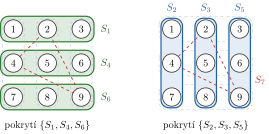
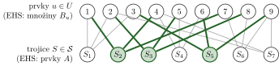
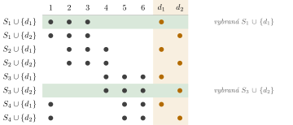

10.4 Úlohy navíc¶
Úlohy jsou ve stylu testu: jedna self-redukce s orákulem pro \(\href{ch-x3c-exact-cover.html#prob-x3c}{\class{woo-pk-prob-x3c}{\prob{X3C}}}\) (typ 2) a sedm důkazů NP-úplnosti (typ 4) s podmínkou „přesně jednou“ – redukce z \(\href{ch-x3c-exact-cover.html#prob-x3c}{\class{woo-pk-prob-x3c}{\prob{X3C}}}\) a \(\href{ch-x3c-1-in-3-sat.html#prob-1in3}{\class{woo-pk-prob-1in3}{\prob{1-in-3 SAT}}}\) (oddíly 10.1 a 10.2) na příbuzné problémy s množinami, formulemi, čísly a grafy. Pododdíl 10.4.4 přidává dvě úlohy z jiné sbírky: NP-úplnost \(\href{ch-x3c-exact-cover.html#prob-x3c}{\class{woo-pk-prob-x3c}{\prob{X3C}}}\) v testové podobě a redukci třírozměrného párování na soustavu \(Ay=\mathbf 1\).
Neoficiální úlohy
Úlohy v tomto oddílu nejsou oficiální zadání předmětu. Jsou to procvičovací úlohy navíc k látce kapitoly; všechna čísla v příkladech jsou spočítaná programem a každá redukce byla porovnána s řešením hrubou silou na tisících náhodných malých instancí (s odpovědí \(\ANO\) i \(\NE\)); self-redukci z úlohy 10.1 jsme pustili se simulovaným orákulem na 3000 náhodných instancích. Samotné důkazy jsou psané ručně. U úloh 10.9 a 10.10 jsme stejně ověřili obě redukce: 700 náhodných formulí s nejvýše třemi proměnnými a čtyřmi klauzulemi (exaktní pokrytí hledal program), resp. 3000 náhodných instancí \(\href{#un-10-10}{\class{woo-pk-pojem-3dm}{\prob{3DM}}}\) s \(q\le3\); soustavu z úlohy 10.10 b) vyřešil program zkoušením všech vektorů.
10.4.1 Rozcvička¶
Úloha 10.1 (exaktní pokrytí pomocí orákula)
Máte k dispozici orákulum, které pro univerzum \(U\) a systém \(\mathcal S\) tříprvkových podmnožin \(U\) v jednom kroku odpoví, zda má instance exaktní pokrytí (rozhodovací verze \(\href{ch-x3c-exact-cover.html#prob-x3c}{\class{woo-pk-prob-x3c}{\prob{X3C}}}\), problém 10.2).
- Pomocí orákula najděte exaktní pokrytí instance \((U,\mathcal S)\), \(\mathcal S=\{S_1,\dots,S_m\}\), nebo oznamte, že neexistuje. Dokažte správnost a odhadněte počet dotazů.
- Spusťte postup na instanci \(U=\{1,\dots,9\}\), \(S_1=\{1,2,3\}\), \(S_2=\{1,4,7\}\), \(S_3=\{2,5,8\}\), \(S_4=\{4,5,6\}\), \(S_5=\{3,6,9\}\), \(S_6=\{7,8,9\}\), \(S_7=\{2,4,9\}\) (množiny zkoušejte v pořadí indexů).
Řešení
Redukce s orákulem: \(\href{ch-x3c-exact-cover.html#prob-x3c}{\class{woo-pk-prob-x3c}{\prob{X3C}}}\) – nalezení pokrytí \(\to\) \(\href{ch-x3c-exact-cover.html#prob-x3c}{\class{woo-pk-prob-x3c}{\prob{X3C}}}\) – rozhodovací verze. Jak: množiny po jedné vyškrtáváme a orákulem hlídáme, že ze zbylých jde exaktní pokrytí pořád složit.
a) Algoritmus. Značení: \(O(U,\mathcal R)\) je odpověď orákula na univerzum \(U\) a systém \(\mathcal R\).
- Zeptej se \(O(U,\mathcal S)\). Při \(\NE\) pokrytí neexistuje – konec.
- \(\mathcal R:=\mathcal S\). Pro \(i=1,\dots,m\): zeptej se \(O(U,\mathcal R\setminus\{S_i\})\). Při \(\ANO\) množinu vyškrtni (\(\mathcal R:=\mathcal R\setminus\{S_i\}\)), při \(\NE\) ji ponech.
- Vydej \(\mathcal R\).
Invariant: \(\mathcal R\) obsahuje nějaké exaktní pokrytí \(U\). Na začátku platí podle prvního dotazu, krok s odpovědí \(\ANO\) ho zachová podle odpovědi orákula a krok s odpovědí \(\NE\) systém \(\mathcal R\) nemění.
Proč na konci nezbyde nic navíc. Podle invariantu obsahuje výsledné \(\mathcal R\) exaktní pokrytí \(\mathcal C\subseteq\mathcal R\). Kdyby v \(\mathcal R\) zůstala množina \(S_j\notin\mathcal C\): když se \(S_j\) testovala, byl tehdejší systém \(\mathcal R'\) nadmnožinou výsledného \(\mathcal R\) (množiny jen ubývají), takže \(\mathcal C\subseteq\mathcal R'\setminus\{S_j\}\) a orákulum by odpovědělo \(\ANO\) – množina \(S_j\) by byla vyškrtnutá. Spor. Tedy \(\mathcal R=\mathcal C\) je exaktní pokrytí.
Počet dotazů: \(1+m\), kde \(m=|\mathcal S|\). Každý dotaz je na podsystém vstupu, takže je nejvýše tak velký jako vstup. (Zlepšení: jakmile má \(\mathcal R\) přesně \(|U|/3\) množin, je podle invariantu sám exaktním pokrytím a dál se ptát nemusíme.)
b) Běh. Instance má právě dvě exaktní pokrytí, \(\{S_1,S_4,S_6\}\) a \(\{S_2,S_3,S_5\}\) (obrázek níže).
| dotaz | odpověď | důvod a akce |
|---|---|---|
| \(\mathcal S\) | \(\ANO\) | pokrytí existuje |
| bez \(S_1\) | \(\ANO\) | zbývá \(\{S_2,S_3,S_5\}\); \(S_1\) vyškrtni |
| bez \(S_2\) | \(\NE\) | prvek \(1\) leží už jen v \(S_2\) (\(S_1\) je vyškrtnutá); ponech |
| bez \(S_3\) | \(\NE\) | prvek \(2\) zbude jen v \(S_7\), ta se protíná s \(S_2\); ponech |
| bez \(S_4\) | \(\ANO\) | \(\{S_2,S_3,S_5\}\); vyškrtni |
| bez \(S_5\) | \(\NE\) | prvek \(3\) leží už jen v \(S_5\) (\(S_1\) je vyškrtnutá); ponech |
| bez \(S_6\) | \(\ANO\) | \(\{S_2,S_3,S_5\}\); vyškrtni |
| bez \(S_7\) | \(\ANO\) | \(\{S_2,S_3,S_5\}\); vyškrtni |
Výsledek \(\{S_2,S_3,S_5\}\) po \(1+7=8\) dotazech. Se zlepšením z a) bychom skončili stejně, \(\mathcal R\) má tři množiny až po posledním vyškrtnutí.

Instance z části b) jako hypergraf: prvky v mřížce \(3\times3\), řádky jsou \(S_1,S_4,S_6\), sloupce \(S_2,S_3,S_5\), čárkovaný trojúhelník je \(S_7=\{2,4,9\}\). Všimni si: které z obou pokrytí vyjde, záleží na pořadí vyškrtávání – \(S_1\) přišla na řadu první, a proto zmizela.
Úloha 10.2 (právě dva ze čtyř)
Problém \(\href{#un-10-2}{\class{woo-pk-pojem-2-in-4-sat}{\prob{2-in-4 SAT}}}\). Vstup: formule v CNF, v níž má každá klauzule přesně čtyři literály. Otázka: existuje ohodnocení, při kterém jsou v každé klauzuli pravdivé právě dva literály?
Dokažte, že \(\href{#un-10-2}{\class{woo-pk-pojem-2-in-4-sat}{\prob{2-in-4 SAT}}}\) je NP-úplný. Nápověda: převádějte z \(\href{ch-x3c-1-in-3-sat.html#prob-1in3}{\class{woo-pk-prob-1in3}{\prob{1-in-3 SAT}}}\) a přidejte jedinou novou proměnnou.
Řešení
Redukce: \(\href{ch-x3c-1-in-3-sat.html#prob-1in3}{\class{woo-pk-prob-1in3}{\prob{1-in-3 SAT}}} \mathrel{\href{../ch-redukce/ch-redukce-jak-porovnat-slozitost-dvou-problemu.html#def-redukce}{\class{woo-pk-def-redukce}{\redp}}} \href{#un-10-2}{\class{woo-pk-pojem-2-in-4-sat}{\prob{2-in-4 SAT}}}\), formule \(\Phi\) \(\mapsto\) \(\Psi\): ke každé klauzuli přidáme literál \(z\) jedné nové proměnné.
1. \(\href{#un-10-2}{\class{woo-pk-pojem-2-in-4-sat}{\prob{2-in-4 SAT}}}\) je v \(\href{../ch-np/ch-np-tridy-nedeterministicke-casove-slozitosti.html#def-ntime}{\class{woo-pk-def-ntime}{\NP}}\). Certifikát je ohodnocení; v každé klauzuli spočítáme pravdivé literály a ověříme, že jsou dva, čas lineární v délce formule.
2. Konstrukce. Pro \(\Phi=C_1\land\dots\land C_m\) nad \(x_1,\dots,x_n\), \(C_j=(\ell_{j,1}\lor\ell_{j,2}\lor\ell_{j,3})\), zavedeme novou proměnnou \(z\) a vydáme
3. Polynomialita. Jedna proměnná navíc a jeden literál navíc v každé klauzuli, čas \(O(n+m)\).
Pozorování (symetrie). Při ohodnocení \(\tau\) má klauzule se čtyřmi literály \(p\) pravdivých literálů; při opačném ohodnocení \(\bar\tau\) (všechny proměnné prohozené) jich má \(4-p\). Pro \(p=2\) je \(4-p=2\), takže je-li \(\tau\) řešením \(\Psi\), je řešením i \(\bar\tau\). (Stejná úvaha jako u \(\href{../ch-sat/ch-sat-nae-3-sat-not-all-equal.html#prob-nae}{\class{woo-pk-prob-nae}{\prob{NAE-3-SAT}}}\).)
4. (\(\Rightarrow\)) Nechť \(\sigma\) je 1-in-3 ohodnocení \(\Phi\). Rozšíříme ho o \(z=1\). V klauzuli \((\ell_{j,1}\lor\ell_{j,2}\lor\ell_{j,3}\lor z)\) je pravdivý přesně jeden z literálů \(\ell_{j,\cdot}\) a navíc \(z\) – celkem dva.
5. (\(\Leftarrow\)) Nechť \(\tau\) je řešení \(\Psi\). Je-li \(\tau(z)=0\), nahradíme ho podle pozorování opačným ohodnocením \(\bar\tau\), které je také řešením a má \(z=1\). Máme tedy řešení s \(z=1\); v každé klauzuli je pak mezi \(\ell_{j,1},\ell_{j,2},\ell_{j,3}\) pravdivý přesně \(2-1=1\) literál. Zúžení na \(x_1,\dots,x_n\) je 1-in-3 ohodnocení \(\Phi\).
6. Závěr. \(\href{ch-x3c-1-in-3-sat.html#prob-1in3}{\class{woo-pk-prob-1in3}{\prob{1-in-3 SAT}}}\) je NP-úplný (kapitola 10), tedy \(\href{#un-10-2}{\class{woo-pk-pojem-2-in-4-sat}{\prob{2-in-4 SAT}}}\) je NP-těžký a s bodem 1 NP-úplný.
Příklad. \(\Phi=(x_1\lor x_2\lor x_3)\land(\lnot x_1\lor x_2\lor x_4)\) má 1-in-3 ohodnocení \(x_1=1\), \(x_2=x_3=0\), \(x_4=1\) (v druhé klauzuli je pravdivé jen \(x_4\)). Formule \(\Psi=(x_1\lor x_2\lor x_3\lor z)\land(\lnot x_1\lor x_2\lor x_4\lor z)\) má řešení \((1,0,0,1,z{=}1)\) a také opačné \((0,1,1,0,z{=}0)\); to druhé dá po prohození zpět první.
Proč stačí jedna proměnná. V části (\(\Leftarrow\)) nevíme, jakou hodnotu dostane \(z\) – a nemusíme ji vynucovat žádným gadgetem, protože symetrie dovolí každé řešení převést na řešení se \(z=1\). Kdyby každá klauzule dostala vlastní novou proměnnou \(z_j\), stačilo by v každé klauzuli mít jeden nebo dva pravdivé literály z původních tří (při \(z_j=0\) dva). Pozitivní formule \((x_1\lor x_2\lor x_3)\land(x_1\lor x_2\lor x_4)\land(x_1\lor x_3\lor x_4)\land(x_2\lor x_3\lor x_4)\) přitom 1-in-3 splnitelná není: při \(t\) pravdivých proměnných je součet pravdivých literálů přes všechny klauzule \(3t\) (každá proměnná je ve třech klauzulích), ale měl by být \(4\). Ohodnocení \(x_1=x_2=1\), \(x_3=x_4=0\) přitom dává v klauzulích \(2,2,1,1\) pravdivých literálů – taková redukce by z \(\NE\) udělala \(\ANO\).
10.4.2 Na úrovni testu¶
Úloha 10.3 (Set Cover a Exact Cover z X3C)
- Dokažte, že \(\href{../ch-is/sec-cv3.html#cv-3-4}{\class{woo-pk-pojem-set-cover}{\prob{Set Cover}}}\) (cvičení 3.4 (= cvičení 4.1): univerzum \(U\), systém \(\mathcal S\) podmnožin, číslo \(k\); lze vybrat nejvýše \(k\) množin se sjednocením \(U\)?) je NP-úplný redukcí z \(\href{ch-x3c-exact-cover.html#prob-x3c}{\class{woo-pk-prob-x3c}{\prob{X3C}}}\).
- \(\href{#un-10-3}{\class{woo-pk-pojem-exact-cover}{\prob{Exact Cover}}}\): je dáno univerzum \(U\) a systém \(\mathcal S\) jeho podmnožin libovolných velikostí. Lze vybrat podsystém, který pokryje každý prvek \(U\) právě jednou? Dokažte, že je NP-úplný.
Řešení
Redukce: \(\href{ch-x3c-exact-cover.html#prob-x3c}{\class{woo-pk-prob-x3c}{\prob{X3C}}} \mathrel{\href{../ch-redukce/ch-redukce-jak-porovnat-slozitost-dvou-problemu.html#def-redukce}{\class{woo-pk-def-redukce}{\redp}}} \href{../ch-is/sec-cv3.html#cv-3-4}{\class{woo-pk-pojem-set-cover}{\prob{Set Cover}}}\), instance \((U,\mathcal S)\) s \(|U|=3q\) \(\mapsto\) \((U,\ \mathcal S,\ k=q)\).
a) 1. Set Cover je v \(\href{../ch-np/ch-np-tridy-nedeterministicke-casove-slozitosti.html#def-ntime}{\class{woo-pk-def-ntime}{\NP}}\). Certifikát je nejvýše \(k\) indexů množin; sjednocení spočítáme a porovnáme s \(U\) v polynomiálním čase.
2. Konstrukce. Univerzum i množiny ponecháme a položíme \(k=q=|U|/3\). Není-li \(|U|\) dělitelné třemi, je odpověď X3C \(\NE\) a vypíšeme pevnou \(\NE\)-instanci \(U=\{1\}\), \(\mathcal S=\emptyset\), \(k=0\).
3. Polynomialita. Výstup je kopie vstupu a jedno číslo, čas lineární.
4. (\(\Rightarrow\)) Exaktní pokrytí v X3C má \(q\) množin a jejich sjednocení je \(U\) – je to pokrytí s nejvýše \(k=q\) množinami.
5. (\(\Leftarrow\)) Nechť \(\mathcal C\subseteq\mathcal S\), \(|\mathcal C|\le q\) a \(\bigcup\mathcal C=U\). Pak
Všude platí rovnost. Z \(3|\mathcal C|=3q\) plyne \(|\mathcal C|=q\); z rovnosti velikosti sjednocení a součtu velikostí plyne, že množiny z \(\mathcal C\) jsou po dvou disjunktní (každý společný prvek by sjednocení zmenšil). Každý prvek \(U\) je tedy pokryt právě jednou a \(\mathcal C\) je exaktní pokrytí s \(q\) množinami.
6. Závěr. \(\href{ch-x3c-exact-cover.html#prob-x3c}{\class{woo-pk-prob-x3c}{\prob{X3C}}}\) je NP-úplný (kapitola 10), tedy \(\href{../ch-is/sec-cv3.html#cv-3-4}{\class{woo-pk-pojem-set-cover}{\prob{Set Cover}}}\) je NP-těžký a s bodem 1 NP-úplný. Pozor: mez \(k=q\) je podstatná. Instance \(U=\{1,\dots,6\}\), \(\{1,2,3\}\), \(\{3,4,5\}\), \(\{1,5,6\}\) exaktní pokrytí nemá (každé dvě množiny se protínají), ale všechny tři množiny pokryjí \(U\) – s \(k=3\) by redukce odpověděla špatně.
b) Exact Cover. V \(\href{../ch-np/ch-np-tridy-nedeterministicke-casove-slozitosti.html#def-ntime}{\class{woo-pk-def-ntime}{\NP}}\): certifikát je podsystém, pro každý prvek spočítáme, kolikrát je pokryt. NP-těžkost: \(\href{ch-x3c-exact-cover.html#prob-x3c}{\class{woo-pk-prob-x3c}{\prob{X3C}}}\mathrel{\href{../ch-redukce/ch-redukce-jak-porovnat-slozitost-dvou-problemu.html#def-redukce}{\class{woo-pk-def-redukce}{\redp}}}\href{#un-10-3}{\class{woo-pk-pojem-exact-cover}{\prob{Exact Cover}}}\) identitou \((U,\mathcal S)\mapsto(U,\mathcal S)\) – X3C je speciální případ s tříprvkovými množinami. (\(\Rightarrow\)) exaktní pokrytí z X3C je exaktní pokrytí. (\(\Leftarrow\)) exaktní pokrytí tříprvkovými množinami je disjunktní a pokrývá \(|U|\) prvků, má tedy právě \(|U|/3=q\) množin, jak X3C požaduje. Zobecnění NP-těžkého problému je NP-těžké.
Úloha 10.4 (Exact Hitting Set)
Problém \(\href{#un-10-4}{\class{woo-pk-pojem-exact-hitting-set}{\prob{Exact Hitting Set}}}\) (EHS): je dána konečná množina \(A\) a systém jejích podmnožin \(B_1,\dots,B_r\). Existuje \(H\subseteq A\) taková, že \(|H\cap B_j|=1\) pro všechna \(j\) (každou množinu „zasáhne“ přesně jednou)?
Dokažte, že EHS je NP-úplný. Nápověda: převádějte z X3C a vyměňte role prvků a množin.
Řešení
Redukce: \(\href{ch-x3c-exact-cover.html#prob-x3c}{\class{woo-pk-prob-x3c}{\prob{X3C}}} \mathrel{\href{../ch-redukce/ch-redukce-jak-porovnat-slozitost-dvou-problemu.html#def-redukce}{\class{woo-pk-def-redukce}{\redp}}} \href{#un-10-4}{\class{woo-pk-pojem-exact-hitting-set}{\prob{Exact Hitting Set}}}\), instance \((U,\mathcal S)\) \(\mapsto\) \((A=\mathcal S,\ \{B_u\}_{u\in U})\), kde \(B_u=\{S\in\mathcal S\mid u\in S\}\).
1. EHS je v \(\href{../ch-np/ch-np-tridy-nedeterministicke-casove-slozitosti.html#def-ntime}{\class{woo-pk-def-ntime}{\NP}}\). Certifikát je \(H\subseteq A\); pro každé \(j\) spočítáme \(|H\cap B_j|\), celkem v čase \(O(|A|\cdot\sum_j|B_j|)\).
2. Konstrukce. Prvky nové instance jsou množiny \(S\in\mathcal S\); za každý prvek \(u\in U\) vznikne množina \(B_u\) všech trojic, které \(u\) obsahují. (Je to transpozice matice incidence – stejný obrat jako mezi \(\href{../ch-is/sec-cv3.html#cv-3-4}{\class{woo-pk-pojem-set-cover}{\prob{Set Cover}}}\) a \(\href{../ch-is/ch-is-vc-hitting-set.html#prob-hs}{\class{woo-pk-prob-hs}{\prob{Hitting Set}}}\) v poznámce k cvičení 3.4 (= cvičení 4.1).)

Graf incidence instance z úlohy 10.1 b). X3C hledá množinu dolních vrcholů, která má s každým horním vrcholem přesně jednoho společného souseda; EHS hledá totéž, jen dolní vrcholy nazývá prvky a horní množinami (\(B_1=\{S_1,S_2\}\), \(B_2=\{S_1,S_3,S_7\}\), …). Zeleně \(H=\{S_2,S_3,S_5\}\).
3. Polynomialita. \(|A|=|\mathcal S|\), \(r=|U|\) a \(\sum_u|B_u|=3|\mathcal S|\); sestrojíme jedním průchodem množinami.
4. (\(\Rightarrow\)) Nechť \(\mathcal C\subseteq\mathcal S\) je exaktní pokrytí; položíme \(H=\mathcal C\). Pro každé \(u\in U\) je \(H\cap B_u\) množina vybraných trojic obsahujících \(u\), a ta je jednoprvková.
5. (\(\Leftarrow\)) Nechť \(H\subseteq\mathcal S\) splňuje \(|H\cap B_u|=1\) pro všechna \(u\). Pak je každý prvek \(u\) v přesně jedné trojici z \(H\), tedy \(H\) pokrývá \(U\) exaktně. Navíc \(3|H|=\sum_{u}|H\cap B_u|=|U|\), takže \(|H|=|U|/3=q\) (a pro \(|U|\) nedělitelné třemi takové \(H\) neexistuje – speciální případ ošetřovat nemusíme). Stejně tak prvek \(u\), který neleží v žádné trojici: dá prázdnou množinu \(B_u=\emptyset\), podmínku \(|H\cap B_u|=1\) nesplní žádné \(H\) a obě instance mají odpověď \(\NE\).
6. Závěr. \(\href{ch-x3c-exact-cover.html#prob-x3c}{\class{woo-pk-prob-x3c}{\prob{X3C}}}\) je NP-úplný, tedy EHS je NP-těžký a podle bodu 1 NP-úplný.
Poznámka. EHS, v němž mají všechny \(B_j\) tři prvky, je přesně pozitivní 1-in-3 SAT (\(A\) = proměnné, \(B_j\) = klauzule, \(H\) = pravdivé proměnné). Je tedy NP-úplný už i v této podobě (redukce \(\prob{3-Coloring}\redp\prob{1-in-3 SAT}\) dává klauzule se třemi různými proměnnými).
Úloha 10.5 (\(\href{ch-x3c-exact-cover.html#prob-x3c}{\class{woo-pk-prob-x3c}{\prob{X3C}}}\mathrel{\href{../ch-redukce/ch-redukce-jak-porovnat-slozitost-dvou-problemu.html#def-redukce}{\class{woo-pk-def-redukce}{\redp}}}\href{../ch-cisla/ch-cisla-ciselne-problemy.html#prob-subsetsum}{\class{woo-pk-prob-subsetsum}{\prob{Subset Sum}}}\) přímo)
- Dokažte, že \(\href{../ch-cisla/ch-cisla-ciselne-problemy.html#prob-subsetsum}{\class{woo-pk-prob-subsetsum}{\prob{Subset Sum}}}\) (definice 11.8) je NP-těžký, redukcí přímo z \(\href{ch-x3c-exact-cover.html#prob-x3c}{\class{woo-pk-prob-x3c}{\prob{X3C}}}\): za každý prvek univerza jedna číslice.
- Vysvětlete, proč nestačí čísla zapsaná ve dvojkové soustavě, na instanci \(U=\{1,\dots,6\}\), \(\mathcal S=\{\{1,3,5\},\{2,3,4\},\{3,4,5\}\}\).
Řešení
Redukce: \(\href{ch-x3c-exact-cover.html#prob-x3c}{\class{woo-pk-prob-x3c}{\prob{X3C}}} \mathrel{\href{../ch-redukce/ch-redukce-jak-porovnat-slozitost-dvou-problemu.html#def-redukce}{\class{woo-pk-def-redukce}{\redp}}} \href{../ch-cisla/ch-cisla-ciselne-problemy.html#prob-subsetsum}{\class{woo-pk-prob-subsetsum}{\prob{Subset Sum}}}\), instance \(U=\{u_1,\dots,u_{3q}\}\), \(\mathcal S=\{S_1,\dots,S_m\}\) \(\mapsto\) čísla \(a_i=\sum_{u_t\in S_i}b^{t-1}\) (\(i=1,\dots,m\)) a cíl \(T=\sum_{t=1}^{3q}b^{t-1}\), kde \(b=m+1\).
1. Subset Sum je v \(\href{../ch-np/ch-np-tridy-nedeterministicke-casove-slozitosti.html#def-ntime}{\class{woo-pk-def-ntime}{\NP}}\). Certifikát je \(I\subseteq\{1,\dots,m\}\); sečteme \(\sum_{i\in I}a_i\) a porovnáme s \(T\), polynomiálně v délce binárního zápisu.
2. Konstrukce. Čísla čteme v soustavě o základu \(b=m+1\). Číslice \(t\) (řád \(b^{t-1}\)) patří prvku \(u_t\). Číslo \(a_i\) má jedničky přesně v číslicích prvků množiny \(S_i\), ostatní nuly; cíl \(T\) má všude jedničky. Příklad pro \(U=\{1,\dots,6\}\), \(S_1=\{1,2,3\}\), \(S_2=\{3,4,5\}\), \(S_3=\{4,5,6\}\), \(S_4=\{2,4,6\}\), \(b=5\):
| číslo | \(u_6\) | \(u_5\) | \(u_4\) | \(u_3\) | \(u_2\) | \(u_1\) | hodnota |
|---|---|---|---|---|---|---|---|
| \(a_1\) (\(S_1\)) | 0 | 0 | 0 | 1 | 1 | 1 | \(31\) |
| \(a_2\) (\(S_2\)) | 0 | 1 | 1 | 1 | 0 | 0 | \(775\) |
| \(a_3\) (\(S_3\)) | 1 | 1 | 1 | 0 | 0 | 0 | \(3875\) |
| \(a_4\) (\(S_4\)) | 1 | 0 | 1 | 0 | 1 | 0 | \(3255\) |
| \(T\) | 1 | 1 | 1 | 1 | 1 | 1 | \(3906\) |
Jediná podmnožina se součtem \(T\) je \(a_1+a_3=31+3875=3906\) a odpovídá jedinému exaktnímu pokrytí \(\{S_1,S_3\}\).
3. Polynomialita. Každé číslo je menší než \(b^{3q}\), jeho binární zápis má nejvýše \(3q\lceil\log_2(m+1)\rceil+1=O(|U|\log|\mathcal S|)\) bitů. Výstup má \(m+1\) takových čísel, celkem \(O(m\cdot|U|\log m)\) bitů – polynomiálně vzhledem ke vstupu. Čísla spočítáme sčítáním mocnin \(b\) v polynomiálním čase.
4. (\(\Rightarrow\)) Nechť \(\{S_i\mid i\in I\}\) je exaktní pokrytí. V každé číslici \(t\) má jedničku přesně jedno \(a_i\) s \(i\in I\) (to, jehož množina obsahuje \(u_t\)), takže \(\sum_{i\in I}a_i=\sum_t 1\cdot b^{t-1}=T\).
5. (\(\Leftarrow\)) Nechť \(\sum_{i\in I}a_i=T\). Označme \(c_t=|\{i\in I\mid u_t\in S_i\}|\). Přerovnáním součtu
Protože jsou všechna \(c_t\) menší než základ, je to zápis čísla v soustavě o základu \(b\) (nedochází k přenosům) a ten je jednoznačný. Číslo \(T\) má všechny číslice rovné \(1\), proto \(c_t=1\) pro každé \(t\): každý prvek \(u_t\) leží v přesně jedné vybrané množině a \(\{S_i\mid i\in I\}\) je exaktní pokrytí (s \(q\) množinami, viz úloha 10.3 b).
6. Závěr. \(\href{ch-x3c-exact-cover.html#prob-x3c}{\class{woo-pk-prob-x3c}{\prob{X3C}}}\) je NP-úplný, tedy \(\href{../ch-cisla/ch-cisla-ciselne-problemy.html#prob-subsetsum}{\class{woo-pk-prob-subsetsum}{\prob{Subset Sum}}}\) je NP-těžký (spolu s bodem 1 NP-úplný).
b) Ve dvojkové soustavě: \(a_1=2^0+2^2+2^4=21\), \(a_2=2^1+2^2+2^3=14\), \(a_3=2^2+2^3+2^4=28\) a \(T=2^6-1=63\). Platí \(21+14+28=63\), a přitom prvek \(3\) je pokryt třikrát, \(4\) a \(5\) dvakrát a \(6\) vůbec. Součty v číslicích (\(c=(1,1,3,2,2,0)\)) „přetečou“ do vyšších řádů a náhodou vyjde \(T\). Se základem \(b=m+1=4\) dostaneme \(a=(273,84,336)\), \(T=1365\), a žádná podmnožina součet \(1365\) nemá – správně \(\NE\). V redukci \(\prob{1-in-3 SAT}\redp\prob{Subset Sum}\) stačil základ 4, protože do každé číslice přispívala nejvýše tři čísla; tady může jeden prvek ležet až v \(m\) množinách, proto základ \(m+1\).
Úloha 10.6 (1-in-3 SAT jako soustava rovnic)
Problém \(\href{#un-10-6}{\class{woo-pk-pojem-01-soustava}{\prob{0/1 soustava rovnic}}}\): je dána celočíselná matice \(A\) typu \(r\times n\) a vektor \(b\in\mathbb Z^r\). Existuje \(y\in\{0,1\}^n\) s \(Ay=b\)?
- Dokažte, že problém je NP-úplný redukcí z \(\href{ch-x3c-1-in-3-sat.html#prob-1in3}{\class{woo-pk-prob-1in3}{\prob{1-in-3 SAT}}}\).
- Sestavte soustavu pro formuli \(\Phi_1=(x_1\lor x_2\lor x_3)\land(x_2\lor x_3\lor x_4)\land(\lnot x_1\lor x_3\lor x_4)\land(\lnot x_1\lor x_2\lor x_4)\) a vyřešte ji.
- Odvoďte, že je NP-těžké i binární ILP ve tvaru \(Ax\le b\) z definice 11.6.
Řešení
Redukce: \(\href{ch-x3c-1-in-3-sat.html#prob-1in3}{\class{woo-pk-prob-1in3}{\prob{1-in-3 SAT}}} \mathrel{\href{../ch-redukce/ch-redukce-jak-porovnat-slozitost-dvou-problemu.html#def-redukce}{\class{woo-pk-def-redukce}{\redp}}} \href{#un-10-6}{\class{woo-pk-pojem-01-soustava}{\prob{0/1 soustava rovnic}}}\), formule \(\Phi\) \(\mapsto\) \((A_\Phi,b_\Phi)\) s jednou rovnicí za každou klauzuli.
a) 1. V \(\href{../ch-np/ch-np-tridy-nedeterministicke-casove-slozitosti.html#def-ntime}{\class{woo-pk-def-ntime}{\NP}}\). Certifikát je vektor \(y\in\{0,1\}^n\); spočítání \(Ay\) a porovnání s \(b\) zabere \(O(rn)\) sčítání čísel délky polynomiální ve vstupu.
2. Konstrukce. Proměnné \(x_i\) odpovídá \(y_i\in\{0,1\}\); hodnota literálu \(x_i\) je \(y_i\), hodnota \(\lnot x_i\) je \(1-y_i\). Klauzule \(C_j\) s \(n_j\) negovanými literály dá rovnici „součet hodnot literálů je 1“:
(Opakuje-li se proměnná v klauzuli, koeficienty se sečtou; rovnost obou stran platí dál.)
3. Polynomialita. \(r=m\) rovnic o \(n\) neznámých, koeficienty z \(\{-3,\dots,3\}\), pravé strany z \(\{-2,\dots,1\}\); sestavení v čase \(O(nm)\).
4. (\(\Rightarrow\)) Nechť \(\sigma\) je 1-in-3 ohodnocení; položíme \(y_i=\sigma(x_i)\). Levá strana rovnice \(j\) je počet pravdivých literálů v \(C_j\), tedy \(1\).
5. (\(\Leftarrow\)) Nechť \(y\in\{0,1\}^n\) řeší soustavu; položíme \(\sigma(x_i)=y_i\). Každý sčítanec levé strany (v první podobě rovnice) je hodnota literálu, tedy \(0\) nebo \(1\), a jejich součet je \(1\): v každé klauzuli je pravdivý přesně jeden literál.
6. Závěr. \(\href{ch-x3c-1-in-3-sat.html#prob-1in3}{\class{woo-pk-prob-1in3}{\prob{1-in-3 SAT}}}\) je NP-úplný (kapitola 10), tedy problém je NP-těžký a s bodem 1 NP-úplný.
b) Pro \(\Phi_1\) (klauzule v pořadí ze zadání):
Ze třetí a čtvrté rovnice \(y_3+y_4=y_1\) a \(y_2+y_4=y_1\). Pro \(y_1=0\) je \(y_2=y_3=y_4=0\) a první rovnice dá \(0=1\). Tedy \(y_1=1\), z první \(y_2=y_3=0\), ze třetí \(y_4=1\); druhá i čtvrtá platí. Jediné řešení \(y=(1,0,0,1)\), tj. jediné 1-in-3 ohodnocení \(x_1=1\), \(x_2=x_3=0\), \(x_4=1\).
c) Rovnost \(\alpha^{\top}y=\beta\) je totéž co dvojice nerovnic \(\alpha^{\top}y\le\beta\) a \(-\alpha^{\top}y\le-\beta\); binárnost celočíselných proměnných vynutíme nerovnicemi \(y_i\le1\) a \(-y_i\le0\). Z \((A,b)\) tak vznikne v lineárním čase ILP \(A'y\le b'\) se stejnou množinou řešení, takže \(\href{#un-10-6}{\class{woo-pk-pojem-01-soustava}{\prob{0/1 soustava rovnic}}}\mathrel{\href{../ch-redukce/ch-redukce-jak-porovnat-slozitost-dvou-problemu.html#def-redukce}{\class{woo-pk-def-redukce}{\redp}}}\href{../ch-cisla/ch-cisla-ilp.html#prob-ilp}{\class{woo-pk-prob-ilp}{\prob{ILP}}}\) a ILP je NP-těžké (druhá cesta vedle redukce \(\prob{3-SAT}\redp\prob{ILP}\)).
Poznámka (nad rámec přednášky). Pustíme-li integralitu (\(0\le y_i\le1\) reálná), je soustava pozitivní formule se třemi různými proměnnými v klauzuli vždy řešitelná: \(y_i=\tfrac13\) dá v každé rovnici \(\tfrac13+\tfrac13+\tfrac13=1\). Například pozitivní formule se všemi čtyřmi trojicemi z \(x_1,\dots,x_4\) (úloha 10.2) žádné 0/1 řešení nemá, a \(y=(\tfrac13,\tfrac13,\tfrac13,\tfrac13)\) přesto splní všechny čtyři rovnice. Těžkost je celá v podmínce \(y\in\{0,1\}^n\).
10.4.3 Těžší úlohy¶
Úloha 10.7 (přesné pokrytí čtveřicemi)
Problém \(\href{#un-10-7}{\class{woo-pk-pojem-x4c}{\prob{X4C}}}\): je dáno univerzum \(U\) s \(|U|=4q\) a systém \(\mathcal S\) čtyřprvkových podmnožin \(U\). Lze vybrat \(q\) množin tak, aby byl každý prvek pokryt právě jednou?
- Dokažte, že \(\href{#un-10-7}{\class{woo-pk-pojem-x4c}{\prob{X4C}}}\) je NP-úplný redukcí z \(\href{ch-x3c-exact-cover.html#prob-x3c}{\class{woo-pk-prob-x3c}{\prob{X3C}}}\).
- Proč nefunguje přidat každé množině \(S\) vlastní nový prvek \(e_S\)? A proč nefunguje přidat všem množinám jeden společný nový prvek \(d\)?
Řešení
Redukce: \(\href{ch-x3c-exact-cover.html#prob-x3c}{\class{woo-pk-prob-x3c}{\prob{X3C}}} \mathrel{\href{../ch-redukce/ch-redukce-jak-porovnat-slozitost-dvou-problemu.html#def-redukce}{\class{woo-pk-def-redukce}{\redp}}} \href{#un-10-7}{\class{woo-pk-pojem-x4c}{\prob{X4C}}}\), instance \((U,\mathcal S)\) s \(|U|=3q\) \(\mapsto\) \((U'=U\cup\{d_1,\dots,d_q\},\ \mathcal S'=\{S\cup\{d_j\}\mid S\in\mathcal S,\ 1\le j\le q\})\).
a) 1. X4C je v \(\href{../ch-np/ch-np-tridy-nedeterministicke-casove-slozitosti.html#def-ntime}{\class{woo-pk-def-ntime}{\NP}}\). Certifikát je \(q\) indexů množin; ověříme, že každý prvek \(U\) leží v právě jedné.
2. Konstrukce. Přidáme \(q\) nových prvků \(d_1,\dots,d_q\) („čísla pozic“ v pokrytí) a každou trojici \(S\in\mathcal S\) nahradíme \(q\) kopiemi \(S\cup\{d_1\},\dots,S\cup\{d_q\}\). Není-li \(|U|\) dělitelné třemi, vypíšeme pevnou \(\NE\)-instanci \(U'=\{1,2,3,4\}\), \(\mathcal S'=\emptyset\).

Instance z obr. 10.2 (\(q=2\)) po redukci: řádky jsou množiny \(\mathcal S'\), tečky jejich prvky. Zeleně jedno exaktní pokrytí. Všimni si: každý řádek má v jantarových sloupcích \(d_1,d_2\) přesně jednu tečku, takže pokrytí vybere přesně \(q\) řádků a každou „pozici“ \(d_j\) jednou. (Instance má 4 pokrytí: dvě pokrytí X3C krát \(2!\) způsobů, jak jim přidělit pozice.)
3. Polynomialita. \(|U'|=4q\), \(|\mathcal S'|=q\cdot|\mathcal S|\), každá množina má 4 prvky: výstup velikosti \(O(q\,|\mathcal S|)\), tedy nejvýše kvadratický ve vstupu.
4. (\(\Rightarrow\)) Nechť \(C_1,\dots,C_q\) je exaktní pokrytí \(U\) (v libovolném pořadí). Množiny \(C_j\cup\{d_j\}\) leží v \(\mathcal S'\), jsou po dvou disjunktní (části \(C_j\) jsou disjunktní a \(d_j\) různé) a jejich sjednocení je \(U\cup\{d_1,\dots,d_q\}=U'\).
5. (\(\Leftarrow\)) Nechť \(\mathcal C'\) je exaktní pokrytí \(U'\). Každá množina z \(\mathcal S'\) obsahuje přesně jeden nový prvek a každé \(d_j\) je pokryto právě jednou, proto \(|\mathcal C'|=q\) a \(\mathcal C'=\{C_j\cup\{d_j\}\mid j=1,\dots,q\}\) pro nějaké \(C_j\in\mathcal S\). Množiny \(C_j=(C_j\cup\{d_j\})\cap U\) jsou po dvou disjunktní (jsou to části disjunktních množin; speciálně je žádná trojice vybraná dvakrát) a každý \(u\in U\) leží v přesně jedné z nich, protože leží v přesně jedné množině z \(\mathcal C'\). Tedy \(\{C_1,\dots,C_q\}\) je exaktní pokrytí \(U\) v X3C.
6. Závěr. \(\href{ch-x3c-exact-cover.html#prob-x3c}{\class{woo-pk-prob-x3c}{\prob{X3C}}}\) je NP-úplný, tedy \(\href{#un-10-7}{\class{woo-pk-pojem-x4c}{\prob{X4C}}}\) je NP-těžký a s bodem 1 NP-úplný. Stejným doplněním (\(\prob{X}k\prob{C}\mathrel{\href{../ch-redukce/ch-redukce-jak-porovnat-slozitost-dvou-problemu.html#def-redukce}{\class{woo-pk-def-redukce}{\redp}}}\prob{X}(k{+}1)\prob{C}\), \(q\) nových prvků) indukcí dostaneme NP-úplnost pro každé pevné \(k\ge3\); pro \(k=2\) jde o perfektní párování v grafu, které je v \(\href{../ch-cas/ch-cas-tridy-p-a-exp.html#def-tridy}{\class{woo-pk-def-tridy}{\PP}}\).
b) Vlastní prvek \(e_S\) za každou množinu: prvek \(e_S\) leží jen v \(S\cup\{e_S\}\), takže každé exaktní pokrytí by muselo vybrat všechny množiny. Instance z obrázku má exaktní pokrytí \(\{S_1,S_3\}\), ale po této úpravě by \(e_{S_2},e_{S_4}\) zůstaly nepokryté – redukce by z \(\ANO\) udělala \(\NE\). Společný prvek \(d\): \(d\) smí být pokryt jen jednou, takže lze vybrat nejvýše jednu množinu a pokrýt 4 prvky z \(3q+1\); pro \(q\ge2\) je výsledek vždy \(\NE\) (a \(3q+1\) navíc obecně není dělitelné čtyřmi). Nových prvků musí být tolik, kolik množin pokrytí má – proto \(q\) kopií každé trojice.
Úloha 10.8 (rozdělení grafu na trojúhelníky)
Problém \(\href{#un-10-8}{\class{woo-pk-pojem-partition-into-triangles}{\prob{Partition into Triangles}}}\). Vstup: graf \(G=(V,E)\) s \(|V|=3q\). Otázka: lze \(V\) rozdělit na \(q\) disjunktních trojic tak, aby každá trojice tvořila v \(G\) trojúhelník?
- Dokažte, že problém je NP-úplný. Nápověda: převádějte z \(\href{ch-x3c-exact-cover.html#prob-x3c}{\class{woo-pk-prob-x3c}{\prob{X3C}}}\); za každou trojici \(\{x,y,z\}\) přidejte 9 nových vrcholů \(a_1,\dots,a_9\) a hrany tak, aby trojúhelníky byly \(\{x,a_1,a_2\}\), \(\{y,a_4,a_5\}\), \(\{z,a_7,a_8\}\), \(\{a_1,a_2,a_3\}\), \(\{a_4,a_5,a_6\}\), \(\{a_7,a_8,a_9\}\) a \(\{a_3,a_6,a_9\}\).
- Proč nestačí udělat z každé trojice \(S\in\mathcal S\) trojúhelník na prvcích \(U\)?
Řešení
Redukce: \(\href{ch-x3c-exact-cover.html#prob-x3c}{\class{woo-pk-prob-x3c}{\prob{X3C}}} \mathrel{\href{../ch-redukce/ch-redukce-jak-porovnat-slozitost-dvou-problemu.html#def-redukce}{\class{woo-pk-def-redukce}{\redp}}} \href{#un-10-8}{\class{woo-pk-pojem-partition-into-triangles}{\prob{Partition into Triangles}}}\), instance \((U,\mathcal S)\) \(\mapsto\) graf \(G\) s vrcholy \(U\) a gadgetem o 9 vrcholech a 18 hranách za každou množinu \(S\in\mathcal S\).
a) 1. Problém je v \(\href{../ch-np/ch-np-tridy-nedeterministicke-casove-slozitosti.html#def-ntime}{\class{woo-pk-def-ntime}{\NP}}\). Certifikát je seznam \(q\) trojic; ověříme, že pokrývají každý vrchol právě jednou a že každá tvoří trojúhelník, v polynomiálním čase.
2. Konstrukce. Vrcholy \(G\) jsou prvky \(U\). Za každou množinu \(S=\{x,y,z\}\in\mathcal S\) (prvky v libovolném pevném pořadí) přidáme nové vrcholy \(a^S_1,\dots,a^S_9\) (horní index dál vynecháváme) a hrany
- \(xa_1\), \(xa_2\), \(a_1a_2\); \(ya_4\), \(ya_5\), \(a_4a_5\); \(za_7\), \(za_8\), \(a_7a_8\) (tři „okvětní lístky“),
- \(a_1a_3\), \(a_2a_3\); \(a_4a_6\), \(a_5a_6\); \(a_7a_9\), \(a_8a_9\),
- \(a_3a_6\), \(a_6a_9\), \(a_3a_9\) (prostřední trojúhelník),
celkem 18 hran. Je-li \(|U|\) nedělitelné třemi, vydáme pevnou \(\NE\)-instanci (jeden vrchol).

Gadget pro trojici \(S=\{x,y,z\}\) a jeho jediná dvě rozdělení na trojúhelníky (vybarvené). Modré vrcholy jsou prvky univerza; s jinými gadgety sdílejí jen je.
3. Polynomialita. \(G\) má \(|U|+9|\mathcal S|\) vrcholů (dělitelné třemi) a \(18|\mathcal S|\) hran; sestrojíme ho jedním průchodem množinami.
Které trojúhelníky v \(G\) jsou. Prvky univerza spolu nesousedí a vrcholy různých gadgetů také ne. Sousedé prvku \(x\) jsou dvojice \(a_1,a_2\) gadgetů množin obsahujících \(x\), a spojené jsou jen dvojice ze stejného gadgetu. Trojúhelníky s prvkem \(x\) jsou tedy jen „lístky“ \(\{x,a_1,a_2\}\) (resp. \(\{y,a_4,a_5\}\), \(\{z,a_7,a_8\}\)). Uvnitř gadgetu má \(a_1\) sousedy \(x,a_2,a_3\) a \(a_3\) sousedy \(a_1,a_2,a_6,a_9\); probráním všech vrcholů zbudou jen trojúhelníky \(\{a_1,a_2,a_3\}\), \(\{a_4,a_5,a_6\}\), \(\{a_7,a_8,a_9\}\) a \(\{a_3,a_6,a_9\}\) – celkem sedm trojúhelníků z nápovědy.
Lemma (dva stavy gadgetu). V každém rozdělení \(G\) na trojúhelníky nastane pro každý gadget jedna ze dvou možností:
- vybraná – \(a_3\) je v \(\{a_3,a_6,a_9\}\). Pak \(a_1,a_2\) mohou být už jen v lístku s \(x\), \(a_4,a_5\) s \(y\) a \(a_7,a_8\) se \(z\): gadget pokryje \(x\), \(y\) i \(z\);
- nevybraná – \(a_3\) je v \(\{a_1,a_2,a_3\}\). Pak \(a_6\) ani \(a_9\) nemůže být v prostředním trojúhelníku (\(a_3\) je obsazený), takže \(a_6\) je v \(\{a_4,a_5,a_6\}\) a \(a_9\) v \(\{a_7,a_8,a_9\}\): gadget nepokryje žádný prvek.
4. (\(\Rightarrow\)) Nechť \(\mathcal C\) je exaktní pokrytí. Gadgety množin z \(\mathcal C\) rozdělíme jako „vybrané“, ostatní jako „nevybrané“. Každý prvek leží v právě jedné množině z \(\mathcal C\), je tedy v právě jednom lístku; vnitřní vrcholy gadgetů jsou pokryté podle obrázku. Je to rozdělení \(G\) na trojúhelníky.
5. (\(\Leftarrow\)) Nechť je dáno rozdělení \(G\) na trojúhelníky. Podle lemmatu je každý gadget vybraný, nebo nevybraný; nechť \(\mathcal C\) jsou množiny s vybraným gadgetem. Prvek \(x\) leží v právě jednom trojúhelníku rozdělení a ten je lístkem některého gadgetu, a to vybraného (nevybraný gadget žádný prvek nepokryje). Vybraný gadget množiny \(S\) přitom pokryje všechny tři prvky \(S\). Každý prvek tedy leží v právě jedné množině z \(\mathcal C\): \(\mathcal C\) je exaktní pokrytí.
6. Závěr. \(\href{ch-x3c-exact-cover.html#prob-x3c}{\class{woo-pk-prob-x3c}{\prob{X3C}}}\) je NP-úplný, tedy \(\href{#un-10-8}{\class{woo-pk-pojem-partition-into-triangles}{\prob{Partition into Triangles}}}\) je NP-těžký a s bodem 1 NP-úplný.
b) Proč ne trojúhelníky přímo na prvcích. Hrany různých trojic mohou dohromady vytvořit trojúhelník, který žádné trojici neodpovídá. Pro \(U=\{1,\dots,6\}\) a \(\mathcal S=\{\{1,2,4\},\{2,3,5\},\{1,3,6\},\{4,5,6\}\}\) exaktní pokrytí neexistuje (prvek 1 leží jen v \(\{1,2,4\}\) a \(\{1,3,6\}\); s první se prvek 3 pokrýt nedá, s druhou prvek 2). Hrany \(12\), \(23\), \(13\) ale dají trojúhelník \(\{1,2,3\}\) a spolu se \(\{4,5,6\}\) rozdělení na trojúhelníky – redukce by z \(\NE\) udělala \(\ANO\). Gadget tomu brání: prvky spolu vůbec nesousedí a každý trojúhelník s prvkem leží v jediném gadgetu.
10.4.4 Úlohy z jiných sbírek¶
Úlohy v tomto pododdílu pocházejí ze sbírky „External Practice Bank“, kterou sestavil spolužák z volně dostupných materiálů (hlavně MFF UK). Zadání jsou česky převyprávěná, řešení jsou naše. Obě úlohy jsou důkazy NP-těžkosti (typ 4 testu); úloha 10.9 se kryje s oddílem 10.2 – berte ji jako opakování „bez nahlížení“.
Problém \(\href{#un-10-10}{\class{woo-pk-pojem-3dm}{\prob{3DM}}}\) z úlohy 10.10 nemá ve skriptech vlastní definici, znění je v zadání: je to \(\href{ch-x3c-exact-cover.html#prob-x3c}{\class{woo-pk-prob-x3c}{\prob{X3C}}}\), kde univerzum tvoří tři třídy \(X,Y,Z\) a každá trojice má z každé třídy jeden prvek. Kuchařky jsou v rámečku na začátku oddílu.
Úloha 10.9 (\(\href{ch-x3c-exact-cover.html#prob-x3c}{\class{woo-pk-prob-x3c}{\prob{X3C}}}\) je NP-úplný)
Je dáno univerzum \(U\) s \(|U|=3q\) a systém \(\mathcal S\) tříprvkových podmnožin \(U\). Lze z \(\mathcal S\) vybrat podsystém, který pokryje každý prvek \(U\) právě jednou? Dokažte, že tento problém (\(\href{ch-x3c-exact-cover.html#prob-x3c}{\class{woo-pk-prob-x3c}{\prob{X3C}}}\), definice 10.2) je NP-úplný.
Důkaz redukcí \(\href{../ch-sat/ch-sat-sat-3-sat.html#red-sat3sat}{\class{woo-pk-pojem-3sat}{\prob{3-SAT}}}\mathrel{\href{../ch-redukce/ch-redukce-jak-porovnat-slozitost-dvou-problemu.html#def-redukce}{\class{woo-pk-def-redukce}{\redp}}}\href{ch-x3c-exact-cover.html#prob-x3c}{\class{woo-pk-prob-x3c}{\prob{X3C}}}\) je v oddílu 10.2.1 (redukce 3-SAT ≤ₚ X3C, lemmata 10.3 a 10.4) – zkuste ho napsat bez nahlížení, v úplné testové podobě (konstrukce, počty prvků, obě implikace).
Zdroj: P. Kučera, NTIN090 – skripta (MFF UK), §11.4, cvičení 8.
Řešení
Redukce: \(\href{../ch-sat/ch-sat-sat-3-sat.html#red-sat3sat}{\class{woo-pk-pojem-3sat}{\prob{3-SAT}}} \mathrel{\href{../ch-redukce/ch-redukce-jak-porovnat-slozitost-dvou-problemu.html#def-redukce}{\class{woo-pk-def-redukce}{\redp}}} \href{ch-x3c-exact-cover.html#prob-x3c}{\class{woo-pk-prob-x3c}{\prob{X3C}}}\), formule \(\Phi\) \(\mapsto\) \((U,\mathcal S)\): proměnná je „ozubené kolo“ s literálovými prvky, klauzule dvojice prvků, kterou pokryje jen volný (pravdivý) literál, a „úklidové“ dvojice pokryjí zbylé literálové prvky.
1. \(\href{ch-x3c-exact-cover.html#prob-x3c}{\class{woo-pk-prob-x3c}{\prob{X3C}}}\in\href{../ch-np/ch-np-tridy-nedeterministicke-casove-slozitosti.html#def-ntime}{\class{woo-pk-def-ntime}{\NP}}\). Certifikát je vybraný podsystém (nejvýše \(|\mathcal S|\) indexů). Pro každý prvek spočítáme, v kolika vybraných množinách leží, a ověříme, že právě v jedné: čas \(O(|U|+|\mathcal S|)\).
2. Konstrukce. \(\Phi\) má proměnné \(x_1,\dots,x_n\) a klauzule \(C_1,\dots,C_m\) (tři literály, mohou se opakovat).
- Proměnná \(x_i\): prvky cyklu \(v_{i,1},\dots,v_{i,2m}\) a literálové prvky \(p^T_{i,j}\), \(p^F_{i,j}\) pro \(j=1,\dots,m\); množiny \(T_{i,j}=\{v_{i,2j-1},v_{i,2j},p^F_{i,j}\}\) a \(F_{i,j}=\{v_{i,2j},v_{i,2j+1},p^T_{i,j}\}\) (indexy cyklu bereme modulo \(2m\)). Výběr všech \(T_{i,\cdot}\) znamená \(x_i=1\): zabere prvky \(p^F\) (nepravdivého literálu \(\lnot x_i\)) a nechá volné \(p^T\).
- Klauzule \(C_j\): prvky \(c^1_j,c^2_j\) a pro každý literál \(\ell\in C_j\) množina \(\{c^1_j,c^2_j,p_{\ell,j}\}\), kde \(p_{\ell,j}=p^T_{i,j}\) pro \(\ell=x_i\) a \(p_{\ell,j}=p^F_{i,j}\) pro \(\ell=\lnot x_i\).
- Úklid: \(K=m(n-1)\) dvojic nových prvků \(g^1_k,g^2_k\) a pro každou dvojici \(k\) a každý literálový prvek \(p\) množina \(\{g^1_k,g^2_k,p\}\).
Počty. \(|U|=n(2m+2m)+2m+2K=6mn\), tedy \(q=2mn\). Volné literálové prvky po výběru ohodnocení: \(mn\); klauzule jich spotřebují \(m\), úklid zbylých \(K=mn-m\). (Pozor na slajd prosemináře, viz rámeček v oddílu 10.2.1.)
3. Polynomialita. \(|U|=6mn\) a \(|\mathcal S|\le 2mn+3m+2mn\cdot K=O(m^2n^2)\); konstrukce vypíše každou množinu v konstantním čase.
4. (\(\Rightarrow\)) Nechť \(h\) splňuje \(\Phi\). Pro \(h(x_i)=1\) vybereme všechny \(T_{i,j}\), pro \(h(x_i)=0\) všechny \(F_{i,j}\): každý prvek cyklu je pokryt právě jednou a volné zůstanou právě literálové prvky pravdivých literálů (\(p^T_{i,j}\) pro \(h(x_i)=1\), \(p^F_{i,j}\) pro \(h(x_i)=0\)), celkem \(mn\) prvků. V každé klauzuli \(C_j\) zvolíme jeden pravdivý literál \(\ell\) a množinu \(\{c^1_j,c^2_j,p_{\ell,j}\}\); prvky \(p_{\ell,j}\) různých klauzulí jsou různé (liší se indexem \(j\)). Zbude \(mn-m=K\) volných literálových prvků, ty bijektivně přiřadíme dvojicím \(g^1_k,g^2_k\) úklidovými množinami. Každý prvek je pokryt právě jednou.
5. (\(\Leftarrow\)) Nechť \(\mathcal C\) je exaktní pokrytí. Prvky cyklu proměnné \(x_i\) leží jen v množinách \(T_{i,\cdot}\) a \(F_{i,\cdot}\): prvek \(v_{i,2j}\) jen v \(T_{i,j}\) a \(F_{i,j}\), prvek \(v_{i,2j+1}\) jen v \(F_{i,j}\) a \(T_{i,j+1}\). Je-li \(T_{i,j}\in\mathcal C\), není tam \(F_{i,j}\) (jinak by \(v_{i,2j}\) byl pokryt dvakrát), a tedy \(v_{i,2j+1}\) musí pokrýt \(T_{i,j+1}\). Po obvodu cyklu jsou v \(\mathcal C\) buď všechny \(T_{i,\cdot}\), nebo žádná; ve druhém případě musí prvky \(v_{i,2j}\) pokrýt všechny \(F_{i,\cdot}\). Položíme \(h(x_i)=1\), právě když \(T_{i,\cdot}\subseteq\mathcal C\). Prvek \(c^1_j\) pokrývá některá množina \(\{c^1_j,c^2_j,p_{\ell,j}\}\), takže \(p_{\ell,j}\) nepokrývá gadget proměnné. Pro \(\ell=x_i\) to znamená, že \(F_{i,j}\notin\mathcal C\), tedy \(h(x_i)=1\); pro \(\ell=\lnot x_i\), že \(T_{i,j}\notin\mathcal C\), tedy \(h(x_i)=0\). V obou případech je \(\ell\) pravdivý a \(C_j\) splněná.
6. Závěr. \(\href{../ch-sat/ch-sat-sat-3-sat.html#red-sat3sat}{\class{woo-pk-pojem-3sat}{\prob{3-SAT}}}\) je NP-úplný, tedy \(\href{ch-x3c-exact-cover.html#prob-x3c}{\class{woo-pk-prob-x3c}{\prob{X3C}}}\) je NP-těžký a s bodem 1 NP-úplný.
Proč ne z 1-in-3 SAT. Redukce Monotónní 1-in-3 SAT ≤ₚ X3C je kratší, ale její množiny \(S_{x_i}\) mají tolik prvků, kolik má \(x_i\) výskytů, ne tři; jako úplný důkaz pro X3C by ji bylo nutné doplnit. U testu je bezpečnější celá konstrukce z \(\href{../ch-sat/ch-sat-sat-3-sat.html#red-sat3sat}{\class{woo-pk-pojem-3sat}{\prob{3-SAT}}}\) výše.
Úloha 10.10 (3-rozměrné párování jako soustava \(Ay=\mathbf 1\))
Problém \(\href{#un-10-10}{\class{woo-pk-pojem-3dm}{\prob{3DM}}}\) (perfektní třírozměrné párování):
Vstup: tři disjunktní množiny \(X\), \(Y\), \(Z\), každá s \(q\) prvky, a množina trojic \(T\subseteq X\times Y\times Z\).
Otázka: existuje \(M\subseteq T\), \(|M|=q\), taková, že každý prvek \(X\cup Y\cup Z\) leží v právě jedné trojici z \(M\)?
- Sestrojte polynomiální redukci \(\href{#un-10-10}{\class{woo-pk-pojem-3dm}{\prob{3DM}}}\) na speciální případ problému \(\href{#un-10-6}{\class{woo-pk-pojem-01-soustava}{\prob{0/1 soustava rovnic}}}\) z úlohy Úloha 10.6 (1-in-3 SAT jako soustava rovnic): existuje \(y\in\{0,1\}^n\) s \(Ay=\mathbf 1\), kde matice \(A\) má jen prvky \(0\) a \(1\) a \(\mathbf 1\) je vektor samých jedniček? Dokažte obě implikace.
- Sestavte soustavu pro \(q=2\), \(X=\{a_1,a_2\}\), \(Y=\{b_1,b_2\}\), \(Z=\{c_1,c_2\}\) a trojice \(t_1=(a_1,b_1,c_1)\), \(t_2=(a_1,b_2,c_2)\), \(t_3=(a_2,b_2,c_2)\), \(t_4=(a_2,b_1,c_2)\) a vyřešte ji.
- Plyne z a) NP-úplnost soustavy \(Ay=\mathbf 1\), když skripta NP-úplnost \(\href{#un-10-10}{\class{woo-pk-pojem-3dm}{\prob{3DM}}}\) nedokazují?
Neznámé značíme \(y\) jako v úloze Úloha 10.6 (1-in-3 SAT jako soustava rovnic) (ve sbírce \(x\)).
Zdroj: P. Veselý, ADS2 – cvičení 10–11 (MFF UK), cvičení 2(e).
Řešení
Redukce: \(\href{#un-10-10}{\class{woo-pk-pojem-3dm}{\prob{3DM}}} \mathrel{\href{../ch-redukce/ch-redukce-jak-porovnat-slozitost-dvou-problemu.html#def-redukce}{\class{woo-pk-def-redukce}{\redp}}} \href{#un-10-6}{\class{woo-pk-pojem-01-soustava}{\prob{0/1 soustava rovnic}}}\) (s \(A\in\{0,1\}^{3q\times|T|}\) a \(b=\mathbf 1\)), instance \((X,Y,Z,T)\) \(\mapsto\) incidenční matice \(A\): řádek za prvek, sloupec za trojici.
a) 1. V \(\href{../ch-np/ch-np-tridy-nedeterministicke-casove-slozitosti.html#def-ntime}{\class{woo-pk-def-ntime}{\NP}}\). Certifikát je vektor \(y\in\{0,1\}^n\); součin \(Ay\) spočítáme a porovnáme s \(\mathbf 1\) v čase \(O(3q\cdot|T|)\).
2. Konstrukce. Označme \(W=X\cup Y\cup Z\) (\(|W|=3q\)). Matice \(A\) má řádek pro každý prvek \(w\in W\) a sloupec pro každou trojici \(t\in T\), přičemž \(A_{w,t}=1\), právě když \(w\in t\). Proměnná \(y_t=1\) znamená „trojice \(t\) je v párování“. Rovnice řádku \(w\) zní
3. Polynomialita. Matice má \(3q\) řádků a \(|T|\le q^3\) sloupců, v každém sloupci právě tři jedničky; sestavení v čase \(O(q\cdot|T|)\).
4. (\(\Rightarrow\)) Nechť \(M\) je perfektní párování. Položíme \(y_t=1\) pro \(t\in M\), jinak \(0\). Levá strana rovnice \(w\) je počet trojic z \(M\) obsahujících \(w\), tedy \(1\).
5. (\(\Leftarrow\)) Nechť \(y\in\{0,1\}^n\) splňuje \(Ay=\mathbf 1\); položíme \(M=\{t\mid y_t=1\}\). Rovnice \(w\) říká, že \(w\) leží v právě jedné trojici z \(M\). Zbývá \(|M|=q\): sečteme všechny rovnice; každý sloupec obsahuje tři jedničky, takže
\(M\) je tedy perfektní třírozměrné párování.
b) Řádky \(a_1,a_2,b_1,b_2,c_1,c_2\), sloupce \(t_1,\dots,t_4\) (neznámá \(y_i\) patří trojici \(t_i\)):
Řádek \(c_1\) dá \(y_1=1\), řádek \(a_1\) pak \(y_2=0\), řádek \(b_1\) dá \(y_4=0\) a řádek \(a_2\) dá \(y_3=1\); řádky \(b_2\) a \(c_2\) platí (\(0+1=1\), \(0+1+0=1\)). Jediné řešení \(y=(1,0,1,0)\), tedy \(M=\{t_1,t_3\}\) (ověřeno i zkoušením všech 16 vektorů).
c) Ne přímo: redukce z \(\href{#un-10-10}{\class{woo-pk-pojem-3dm}{\prob{3DM}}}\) dává NP-těžkost jen tehdy, je-li NP-těžký \(\href{#un-10-10}{\class{woo-pk-pojem-3dm}{\prob{3DM}}}\), a to skripta nedokazují ((nad rámec přednášky): \(\href{#un-10-10}{\class{woo-pk-pojem-3dm}{\prob{3DM}}}\) je NP-úplný, Karp 1972). Konstrukce ale nikde nevyužila, že trojice „mají po jednom prvku z \(X\), \(Y\), \(Z\)“: incidenční matice funguje pro libovolný systém tříprvkových množin, tedy i jako redukce \(\href{ch-x3c-exact-cover.html#prob-x3c}{\class{woo-pk-prob-x3c}{\prob{X3C}}}\mathrel{\href{../ch-redukce/ch-redukce-jak-porovnat-slozitost-dvou-problemu.html#def-redukce}{\class{woo-pk-def-redukce}{\redp}}}\href{#un-10-6}{\class{woo-pk-pojem-01-soustava}{\prob{0/1 soustava rovnic}}}\) s \(b=\mathbf 1\) (důkaz je doslova stejný). \(\href{ch-x3c-exact-cover.html#prob-x3c}{\class{woo-pk-prob-x3c}{\prob{X3C}}}\) je NP-úplný (kapitola 10), takže soustava \(Ay=\mathbf 1\) s 0/1 maticí je NP-úplná i bez \(\href{#un-10-10}{\class{woo-pk-pojem-3dm}{\prob{3DM}}}\). Je to jen maticový zápis \(\href{#un-10-3}{\class{woo-pk-pojem-exact-cover}{\prob{Exact Cover}}}\) z úlohy Úloha 10.3 (Set Cover a Exact Cover z X3C) b): sloupce jsou množiny, řádky prvky. A protože rovnost \(Ay=\mathbf 1\) je dvojice nerovností \(Ay\ge\mathbf 1\), \(-Ay\ge-\mathbf 1\), jde zároveň o speciální případ \(\href{../ch-cisla/ch-cisla-ulohy-navic.html#un-11-12}{\class{woo-pk-pojem-01-ilp}{\prob{0-1 ILP}}}\) z úlohy Úloha 11.12 (0/1 celočíselná přípustnost) (tam se neznámé značí \(x\)).